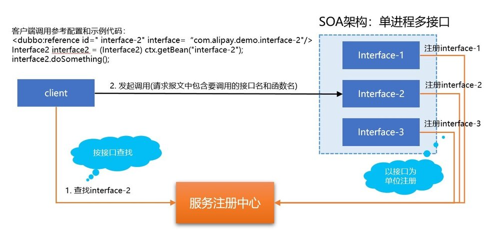

本文是SOFAMesh中的多协议通用解决方案x-protocol介绍系列文章之一。
SOFAMesh中的多协议通用解决方案x-protocol介绍系列（1）——DNS通用寻址方案
前言
在2018年上半年，蚂蚁金服决定基于 Istio 订制自己的 ServiceMesh 解决方案，在6月底对外公布了 SOFAMesh，详情请见之前的文章: 大规模微服务架构下的Service Mesh探索之路 。
在 SOFAMesh 的开发过程中，针对遇到的实际问题，我们给出了一套名为 x-protocol 的解决方案，定位是云原生、高性能、低侵入性的通用 Service Mesh 落地方案，依托 Kubernetes 基座，利用其原生的服务注册和服务发现机制，支持各种私有 RPC 协议低成本、易扩展的接入，快速享受 Service Mesh 所带来的红利。
具体解决的问题包括：
- 多通讯协议支持问题，减少开发工作量，简单快捷的接入新协议
- 尽量提升性能，提供更灵活的性能与功能的平衡点选择，满足特定高性能场景
- 兼容现有SOA体系，提供通过接口进行访问的方式，实现不修改业务代码也能顺利接入 Service Mesh
- 支持单进程多服务的传统SOA程序，可以在微服务改造之前，先受益于 Service Mesh 带来的强大功能
在本系列文章中，我们将对此进行详细的讲解，首先是“DNS通用寻址方案”。
背景和需求
SOA的服务模型
在SOFAMesh计划支持的RPC框架中，SOFARPC、HSF、Dubbo都是一脉相承的SOA体系，也都支持经典的SOA服务模型，通常称为”单进程多服务”，或者叫做”单进程多接口”。（备注：由于服务一词使用过于频繁，下文都统一称为接口以便区分）
SOA标准的服务注册，服务发现和调用流程如下：

- 在单个SOA应用进程内，存在多个接口
- 服务注册时，以接口为单位进行多次独立的服务注册
- 当客户端进行调用时，按照接口进行服务发现，然后发起调用
当我们试图将这些SOA架构的应用搬迁到ServiceMesh时，就会遇到服务模型的问题：微服务是单服务模型，也就是一个进程里面只承载一个服务。以Kubernetes的服务注册为例，在单进程单服务的模型下，服务名和应用名可以视为一体，Kubernetes的自动服务注册会将应用名作为服务注册的标示。
这就直接导致了SOA模型和微服务模型的不匹配问题：
- SOA以接口为单位做服务注册和服务发现，而微服务下是服务名
- SOA是”单进程多接口”，而微服务是”单进程单服务”
一步接一步的需求
-
先上车后补票
最理想的做法当然是先进行微服务改造，实现微服务拆分。但是考虑到现有应用数量众多，我们可能更愿意在大规模微服务改造之前，先想办法让这些应用可以运行在ServiceMesh下，提前受益于Service Mesh带来的强大功能。因此，我们需要找到一个合适的方案，让ServiceMesh支持没有做微服务改造依然是”单进程多接口”形式的传统SOA应用，所谓”先上车后补票”。
-
不修改代码
考虑到原有的SOA应用，相互之间错综复杂的调用关系，最好不要修改代码，即保持客户端依然通过接口名来访问的方式。当然，SOA架构的客户端SDK可能要进行改动，将原有的通过接口名进行服务发现再自行负载均衡进行远程调用的方式，精简为标准的Servicemesh调用（即走Sidecar），因此修改SDK依赖包和重新打包应用是不可避免。
-
支持带特殊字符的接口名
Kubernetes的服务注册，Service名是不能携带”.“号的。而SOA架构下，接口名有时出于管理方便，有可能是加了域名前缀，如”com.alipay.demo.interface-2”。为了实现不修改原有代码，就只能想办法支持这种带特殊字符的接口名。
参考Kubernetes和Istio
在进一步讨论解决方案之前，我们先来看一下kubernetes和Istio中的标准请求寻址方式。
备注：过程稍显复杂，涉及到Kubernetes/Istio的一些底层细节。但是了解这个过程对后续的理解非常重要，也可以帮助大家了解Kubernetes和Kubernetes的工作原理，强烈推荐阅读。
Kubernetes下的DNS寻址方式
在Kubernetes下，如图所示，假定我们部署了一个名为userservice的应用，有三个实例，分别在三个pod中。则应用部署之后，Kubernetes会为这个应用分配ClusterIP和域名，并在DNS中生成一条DNS记录，将域名映射到ClusterIP：

当部署在Kubernetes下的某个充当客户端的应用发起请求时，如图中的HTTP GET请求，目标URL地址为 “http://userservice/id/1000221”。请求的寻址方式和过程如下：
- 首先进行域名解析，分别尝试解析”userservice”/“userservie.default.svc.cluster.local”等域名，得到ClusterIP
- 然后客户端发出请求的报文，目标地址为ClusterIP，源地址为当前客户端所在的pod IP（简单起见，端口先忽略）
- 请求报文随即被kube-proxy拦截，kube-proxy根据ClusterIP，拿到ClusterIP对应的多个实际服务实例所在的pod ip，取其中一个，修改目标地址为这个pod IP
- 请求报文最终就被发送到服务实例所在的pod IP
应答回来的方式类似，userservice发出的应答报文会被kube-proxy拦截并修改为发送到客户端所在的pod IP。
我们详细看一下请求和应答全称的四个请求包的具体内容（简单起见继续忽略端口）：
重点关注请求和应答报文的源地址和目标地址：
- 客户端发出的请求，为”客户端到ClusterIP”
- kube-proxy拦截到请求后，将请求修改为”客户端到服务器端”
- 服务器端收到请求时，表现为”客户端到服务器端”，ClusterIP被kube-proxy屏蔽
- 服务器端发送应答，因为收到的请求看似来自客户端，因此应答报文为”服务器端到客户端”
- 应答报文被kube-proxy拦截，将应答修改为”ClusterIP到服务器端”
- 客户端收到应答，表现为”ClusterIP到服务器端”，服务器端IP被kube-proxy屏蔽
kube-proxy在客户端和服务器端之间拦截并修改请求和应答的报文，联通两者，但各自屏蔽了一些信息：
- 在客户端看来它是在和ClusterIP交互，userservice的具体服务器端实例对客户端是无感知的
- 在服务器端看来，客户端是直接在和它交互，ClusterIP的存在对服务器端是无感知的
更深入一步，看kube-proxy在两个拦截和修改报文中的逻辑处理关系，即kube-proxy是如何在收到应答时正确的找回原有的ClusterIP：
- 在拦截并修改请求报文之后，kube-proxy会保存报文修改的5元组对应关系（5元组指源IP地址，源端口，协议，目的地IP地址，目的地端口）
- 在收到应答报文后，根据应答报文中的5元组，在保存的5元组对应关系中，找到对应信息，得到原有的ClusterIP和端口，然后修改应答报文
总结，通过上述Kubernetes下的寻址方式，客户端只需发送带简单寻址信息的请求（如 “http://userservice/id/1000221” 中的”userservice” ），就可以寻址到正确的服务器端。这期间有两个关注点：
-
通过DNS，建立了域名和ClusterIP的关系。
对于客户端，这是它能看到的内容，非常的简单，域名、DNS是非常容易使用的。
-
而通过kube-proxy的拦截和转发，又打通了ClusterIP和服务器端实际的Pod IP
对于客户端，这些是看不到的内容，不管有多复杂，都是Kubernetes在底层完成，对客户端，或者说使用者透明。
以客户端的视角看来，这个DNS寻址方式非常的简单直白：
Istio的DNS寻址方式
Istio的请求寻址方式和普通kubernetes非常相似，原理相同，只是kube-proxy被sidecar取代，然后sidecar的部署方式是在pod内部署，而且客户端和服务器端各有一个sidecar。其他基本一致，除了图中红色文本的部分：
- iptables在劫持流量时，除了将请求转发到localhost的Sidecar处外，还额外的在请求报文的TCP options 中将 ClusterIP 保存为 original dest。
- 在 Sidecar （Istio默认是Envoy）中，从请求报文 TCP options 的 original dest 处获取 ClusterIP
通过TCP options 的 original dest，iptables就实现了在劫持流量到Sidecar的过程中，额外传递了 ClusterIP 这个重要参数。Istio为什么要如此费力的传递这个 ClusterIP 呢？
看下图就知道了，这是一个 Virtual Host 的示例， Istio 通过 Pilot 将这个规则发送给 Sidecar/Envoy ，依靠这个信息来匹配路由请求找到处理请求的cluster：

domains中，除了列出域名外，还有一个特殊的IP地址，这个就是Kubernetes服务的 ClusterIP！因此，Sidecar可以通过前面传递过来的 ClusterIP 在这里进行路由匹配（当然也可以从报文中获取destination然后通过域名匹配）。
总结，Istio延续了Kubernetes的寻址方式，客户端同样只需发送带简单寻址信息的请求，就可以寻址到正确的服务器端。这期间同样有两个关注点：
-
通过DNS，建立了域名和ClusterIP的关系。
-
通过 ClusterIP 和 Pilot 下发给 Virtual Host 的配置，Sidecar 可以完成路由匹配，将ClusterIP和目标服务器关联起来
同样，对于客户端，这些是看不到的内容。
因此，以客户端的视角看来，Istio的这个DNS寻址方式同样的简单直白！

DNS通用寻址方案
解决问题的思路
在详细讲述了Kubernetes和Istio的DNS寻址方案之后，我们继续回到我们的主题，我们要解决的问题：
如何在不修改代码，继续使用接口的情况下，实现在Service Mesh上运行现有的Dubbo/HSF/SOFA等传统SOA应用？

这里有一个关键点：Kubernetes的服务注册是以基于Service或者说基于应用(app name)，而我们的客户端代码是基于接口的。因此，在 Virtual Host 进行路由匹配时，是不能通过域名匹配的。当然，这里理论上还有一个思路，就是将接口注册为Kubernetes Service。但是，还记得要支持接口特殊字符的需求吗？带点号的接口名，Kubernetes是不能接受它作为Service Name的，直接堵死了将接口名注册到Kubernetes Service的道路。
这样，我们就只有一条路可以走了：效仿Istio的做法，通过 ClusterIP 匹配！
而要将接口名（如”com.alipay.demo.interface-1”）和 ClusterIP 关联，最简单直接的方式就是打通DNS ：
只需要在DNS记录中，增加接口到 ClusterIP 的映射，然后就可以完全延续Istio的标准做法！其他的步骤，如域名解析到ClusterIP，iptables拦截并传递ClusterIP，sidecar读取ClusterIP并匹配路由，都完全可以重用原有方案。
具体实现方案
实现时，我们选择了使用 CoreDNS 作为Kubernetes的DNS解决方案，然后通过 Service Controller 操作 CoreDNS 的记录来实现DNS解析。
为了收集到SOA应用的接口信息，我们还提供了一个 Register Agent 给 Service Controller 收集信息。
详细的实现方案，不在本文中重复讲述，请参阅我们之前的分享文章 SOFAMesh 的通用协议扩展 中的DNS寻址方案一节。
备注：暂时修改 CoreDNS 记录的方式是直接修改 CoreDNS 的底层数据，不够优雅。未来将修改为通过 CoreDNS 的 Dynamic updates API 接口进行，不过 CoreDNS 的这个API还在开发中，需要等待完成。详情见这里 。
单进程多接口问题的解决
上面的解决方案，在解决通过接口实现访问的同时，也将”单进程多接口”的问题一起解决了：
- 原SOA应用上Kubernetes时，可以注册为标准的Kubernetes Service，获取ClusterIP。此时使用应用名注册，和接口无关。
- 通过操作 CoreDNS，我们将该SOA应用的各个接口都添加为 DNS 记录，指向该应用的ClusterIP
- 当客户端代码使用不同的接口名访问时，DNS解析出来的都是同一个ClusterIP，后续步骤就和接口名无关了
欠缺微服务改造带来的限制
需要特别指出的是，DNS通用寻址方案虽然可以解决使用接口名访问和支持单进程多接口的问题，但是这种方案只是完成了“寻址”，也就是打通端到端的访问通道。由于应用没有进行微服务改造，部署上是依然一个应用（体现为一个进程，在Kubernetes上体现为一个Service）中包含多个接口，本质上：
- 服务注册依然是以应用名为基础，对应的Kubernetes service和service上的label也是应用级别
- 因此提供的服务治理功能，也是以Kubernetes的Service为基本单位，包括灰度，蓝绿，版本拆分等所有的Version Based Routing功能
- 这意味着，只能进行应用级别的服务治理，而不能继续细分到接口级别
这个限制来源于应用没有进行微服务改造，没有按照接口将应用拆分为多个独立的微服务，因此无法得到更小的服务治理粒度。这也就是我们前面说的“先上车后补票”的含义：在微服务改造前，先获得Service Mesh的服务治理的绝大部分功能，再慢慢进行微服务改造。
DNS通用寻址方案
我们将这个方案称为”DNS通用寻址方案”，是因为这个方案真的非常的通用，体现在以下几个方面：
- 对使用者来说，通过域名和DNS解析的方式来访问，是非常简单直白而易于接受的，同时也是广泛使用的，适用于各种语言、平台、框架
- 这个方案延续了Kubernetes和Istio的做法，保持了一致的方式，对用户提供了相同的体验
- 这个寻址方案，不仅仅可以用于Dubbo、SOFA、HSF等RPC框架往Service Mesh的迁移，也可以适用于基于HTTP/REST协议的SOA应用，甚至最传统的web应用（例如tomcat下部署多个war包）迁移到Service Mesh
- 我们也在考虑在未来的Serverless项目中，将Function的寻址也统一到这套方案中，而无需要求每个Function都进行一次服务注册
概括的说，有了这套DNS通用寻址方案，不管需要寻址的实体是什么形态，只要它部署在Service Mesh上，满足以下条件：
- 有正常注册为Kubernetes Service，分配有ClusterIP
- 为实体（或者更细分的子实体）分配域名或子域名，然后添加到DNS，解析到ClusterIP
那么我们的DNS通用寻址方案，就可以工作，从而将请求正确的转发到目的地。而在此基础上，Service Mesh 所有的强大功能都可以为这些实体所用，实现我们前面的目标：在不修改代码不做微服务改造的情况下，也能提前受益于Service Mesh带来的强大服务治理功能。